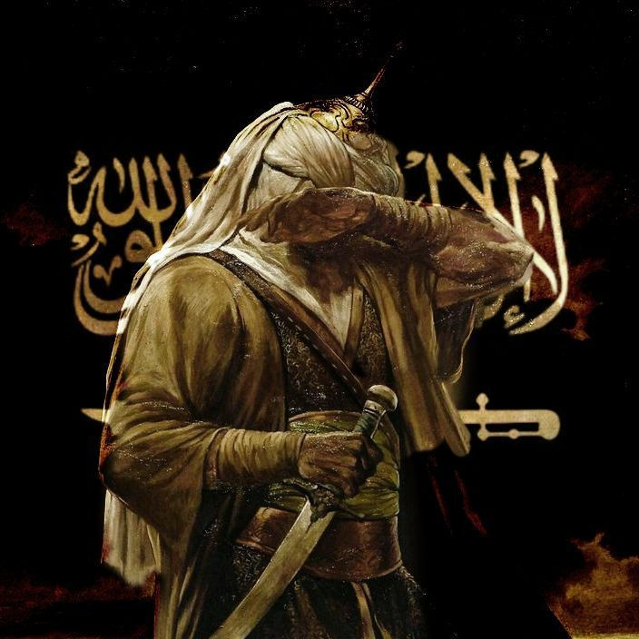

Discover his life(Seerah of Prophe Muhammed)
Explore the life, character, and journey of Prophet Muhammad ﷺ through this concise Seerah guide
Prophet Muhammed ﷺ Life
A mercy to the worlds, a model of noble character, and a timeless example of compassion, patience, justice, and humility. His life continues to inspire hearts and guide generations toward faith and righteous character.


The qualities that made him a timeless example of noble character.
A journey of faith, perseverance, and spreading the message of Islam.
A lasting example that continues to guide hearts and shape lives.
“The most beloved of people to Allah are those who are most beneficial to people. And the most beloved of deeds to Allah are those that bring happiness to a Muslim, relieve him of hardship, pay off his debt, or satisfy his hunger.”
-Prophet Muhammed ﷺ